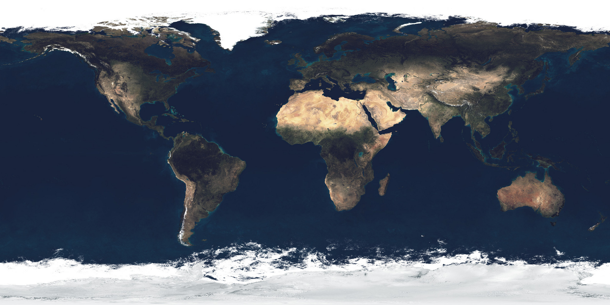
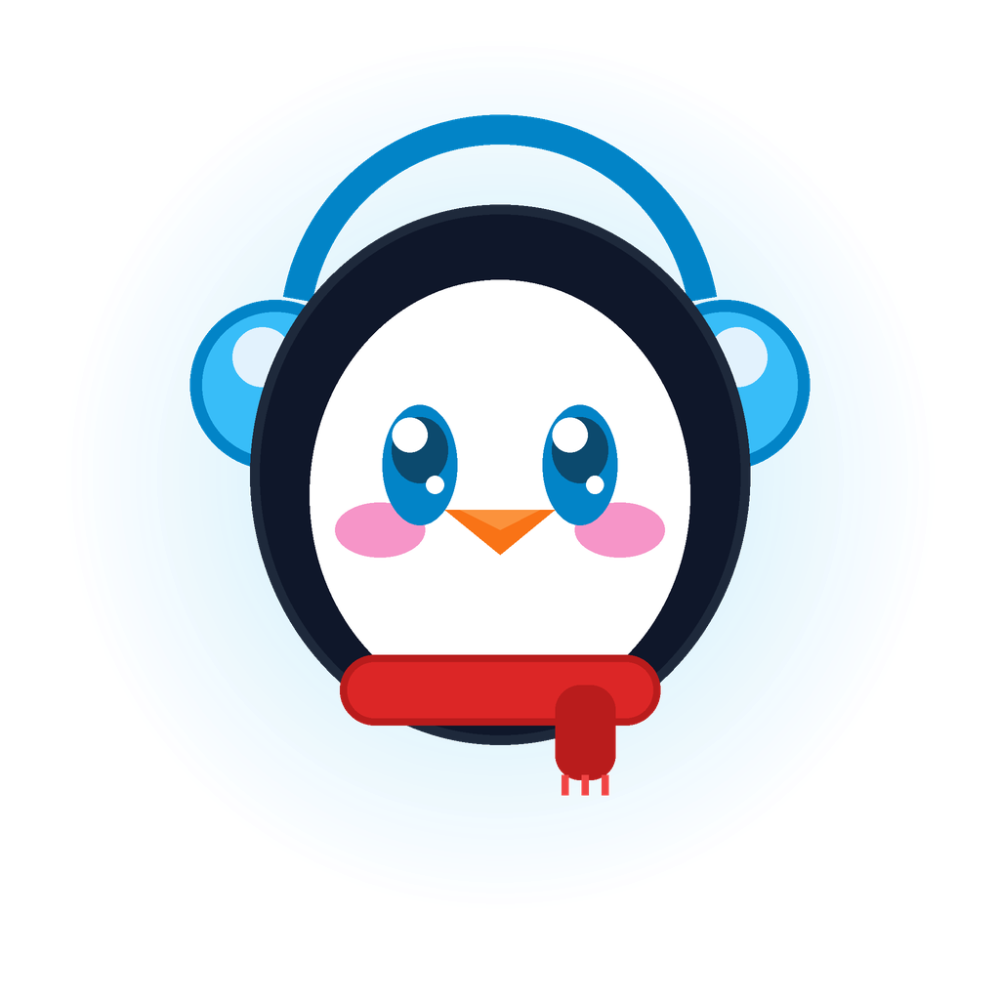

GLOBIQUEST SCOPE / SPATIAL OBSERVATORY
A world within reach.
Preparing your floating observatory…
◈
Globiquest Scope
Tiny World
Telescope: explore and zoom · Crystal: learn words · Brush: paint
Drag to look · Click to select · Quest: point + trigger
Preparing your world…
✦ Art studio
Enter VR ↗
?
⌂
Home
◎
Explore
文
Words
◈
Guide
⌕
Lens
♪
Music
✦
Art Studio

